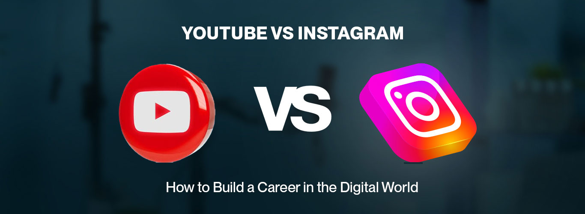

As per Social Shepherd, YouTube has over 2.5 billion monthly active users, making it one of the largest social media platforms globally. In today's era, We as a video editing agency believe YouTube and Instagram are booming with a high demand for high-quality video content. When deciding between YouTube and Instagram for your digital engagement strategy, it is important to understand their different features and how they help you get your content viral over the internet. YouTube has many offerings like video sharing, live streaming, community building, and more!
. As of January 2025, YouTube streamers like Carry Minati (41.1 Million subscribers), Ajay Variya (43 Million subscribers), Ashish Chanchlani (17 Million subscribers), etc. Have become so popular and work as YouTubers as a source of their active income.
On the other hand, Instagram is one of the most used and loved platforms, especially for Genz and millennials, where they have a variety of options to share their content, whether it is in a picture format or in a Video format. It is very challenging for us to choose one favorite platform of ours especially when it comes to YouTube and Instagram.
Note: Initially, Instagram used to be known as Codename, but later the name got changed to Instagram prior to its launch.
. As of January 2025, Creators like Kusha Kapila (3.2 Million Followers), Gaurav Taneja (3.7 Million Followers), and Komal Pandey (1.8 Million Followers) have broken the internet with their viral and unique content ideas whether it’s Fashion, Lifestyle, or regular comedy.
Note: The most-watched YouTube video has over 11.5 billion views
| S.No | Features | Youtube | |
|---|---|---|---|
| 1. | Active Users | 2 billion monthly users | 2 billion logged-in monthly users |
| 2. | Content Style | Polished lifestyle and short-form videos | Long-form tutorials and vlogs |
| 3. | Primary Audience | Millennials and Gen Z | Broad demographic including all ages |
| 4. | Engagement Time | Over 10 hours/month | Significant daily visits |
| 5. | Monetization | Sponsored posts, Instagram Shop | Ads, memberships, merchandise |
In the world of Business and with the rising Video editing price so when you are deciding between YouTube and Instagram for your business, each platform has its strengths depending on your content and audience.
YouTube is great for businesses that want to share detailed content like tutorials, reviews, or educational videos. It allows longer videos, making it perfect for in-depth storytelling. YouTube also provides strong analytics to understand viewer behavior and engagement, helping you improve your marketing. Plus, its SEO benefits mean your content can stay visible and continue to get views over time.
Instagram, on the other hand, shines with visuals and short, engaging content. It’s ideal for brands that want to build a strong visual identity and reach a younger audience quickly. Features like Stories, Reels, and shopping links make it perfect for real-time marketing and direct customer interaction. However, it’s not the best platform for sharing complex information, as people usually want quick, visual content.
Reels and short forms are in real trend these days and there has been a lot of buzz for these forms of content but the question comes when it comes to choosing between the platforms.
| Feature | YouTube Shots | Instagram Reels |
|---|---|---|
| Audience Growth | Good for growing your audience over time. Shorts are seen by followers and new viewers. | Perfect for getting popular fast, as Instagram boosts new content. |
| Easy to use | Allows up to 60 seconds of video with YouTube’s music and sounds. | Offers filters, effects, and music for creative videos. |
| Engagement | Can reach both subscribers and new viewers. | Easy to interact with followers through comments, polls, and other features. |
Both platforms have their strengths, and choosing between them depends on your goals:
Choose YouTube Shorts to capitalize on YouTube’s vast audience, enhance long-term content visibility, and utilize a platform that supports both short and long-form videos.
Opt for Instagram Reels for rapid engagement, participation in trending content, and access to Instagram’s interactive and highly social features.
Posting content over both platforms can help you to have a better reach for your content as they serve different audiences based on their age, gender, location, and personal interest, both YouTube Shorts and Instagram Reels allow you to have great benefits and exciting features.
The demand for each platform is increasing day by day and it created a revolution in the field of Marketing video editing agencies. They have opened a new way of making your content and reaching different niches. We as a Video editing agency believe that each platform has its own pros and cons. It is important that you should know which type of content you will be sharing.
YouTube is termed to be the King of online videos. Now it has extended to involve influencers and creators to have a channel of their own in which they get a good amount but you need to be very patient with the growth of the channel.
1. Compensation: They offer you a huge price as per the number of followers and subscribers.
2. Building Community: It's very difficult to build a community of your own but once you get the reach you are the owner of the entire empire.
1. Higher payments: YouTube is a very big platform that requires consistent effort and high-quality content to get a good reach.
2. Changing Algorithms: YouTube's algorithm can be unpredictable as it keeps on changing every month.
Being in a fast-moving digital world the organizations that stand out in the race are those who consider video editing as an essential part of their work structure. At Glocal Edit we have professional video editors and creative content.
1. Dedicated editors for every project
At our organization, we assign personalized skilled editors who work according to needs and maintain a proper understanding to make a balance and understand business needs and requirements. This helps to ensure that every video aligns with the brand and delivers the best results over other competitors
2. High Content Engagement
We use hooks that grab the attention of the users, Stock footage, Trending music and dynamic elements to make your videos stand out. Our bigger goal is to provide better results with increased views and high engagement rate over the videos
3. Providing Consistent and Fast Video Delivery
Our team focuses on delivering high quality edits while maintaining brand reputation and consistency. They also ensure to deliver seamless content that reflects the vision of the brand.
4. Content Curation
We curate and not just edit the content. Our team works and delivers the best by providing content by doing research over what is considered to be the best in the market by providing good edits and high quality content.
5. Scalable Video Edit Solutions
Whether it is a small project or large, we are here to handle it all. Whether it is a reel, movie or product promo; corporate shoot or sales content, we help you scale your business to new heights.
Still got questions? Let’s connect today and make something extra ordinary together!
Which platform is considered better to post on YouTube or Instagram?
It depends on various factors on which you have to decide for which platform you need to post your content on like the niche you are choosing, content format, industry etc.
Which is better YouTube or blogging?
YouTube is better for vlogging; However, blogging serves an altogether different purpose. If the goal is to get conversions, blogging should be the wise choice to make, and for branding purposes, YouTube should be the go-to platform.
Which is better Instagram or YouTube?
YouTube and Instagram have their own sets of benefits and challenges. It should be an individual call to go for either of the platforms.